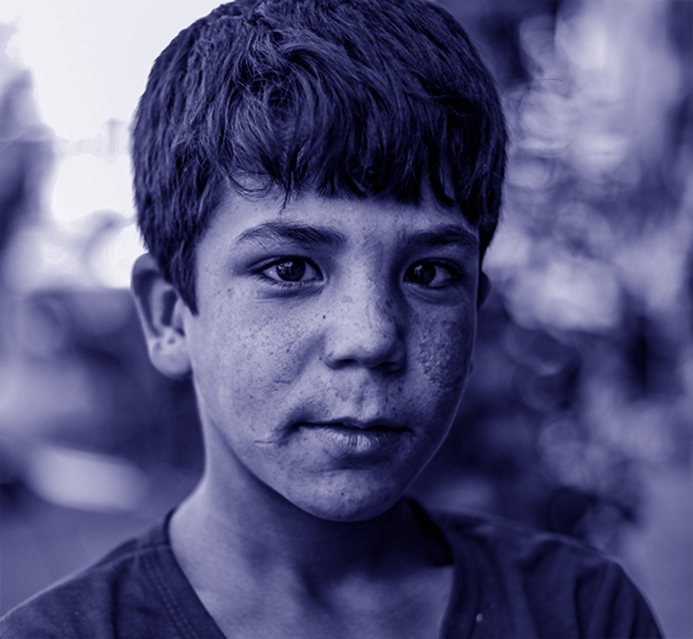

C'est quoi le TSA ?

Définition
Le trouble du spectre de l’autisme (TSA) est un trouble du neurodéveloppement présent dès l’enfance. Il peut affecter la communication, les relations sociales et certains comportements, mais se manifeste différemment selon les personnes.
Cette diversité de profils explique l’utilisation du terme « spectre », les personnes autistes percevant parfois le monde de manière différente.
Effets sur l’apprentissage
Les enfants atteints du trouble du spectre de l'autiste apprennent parfois différemment. Des consignes claires, des images et un environnement calme peuvent les aider à apprendre plus facilement.
Effets sur la vie quotidienne
Les personnes autistes peuvent rencontrer des difficultés au quotidien, comme le bruit, les changements ou les relations avec les autres. Avec des routines, des supports visuels et de la compréhension, elles peuvent se sentir mieux et gagner en autonomie.
Pourquoi l'eye-tracking est important ?
Chaque personne regarde le monde à sa façon.
Chez certaines personnes
autistes, le
regard peut
se poser
différemment.